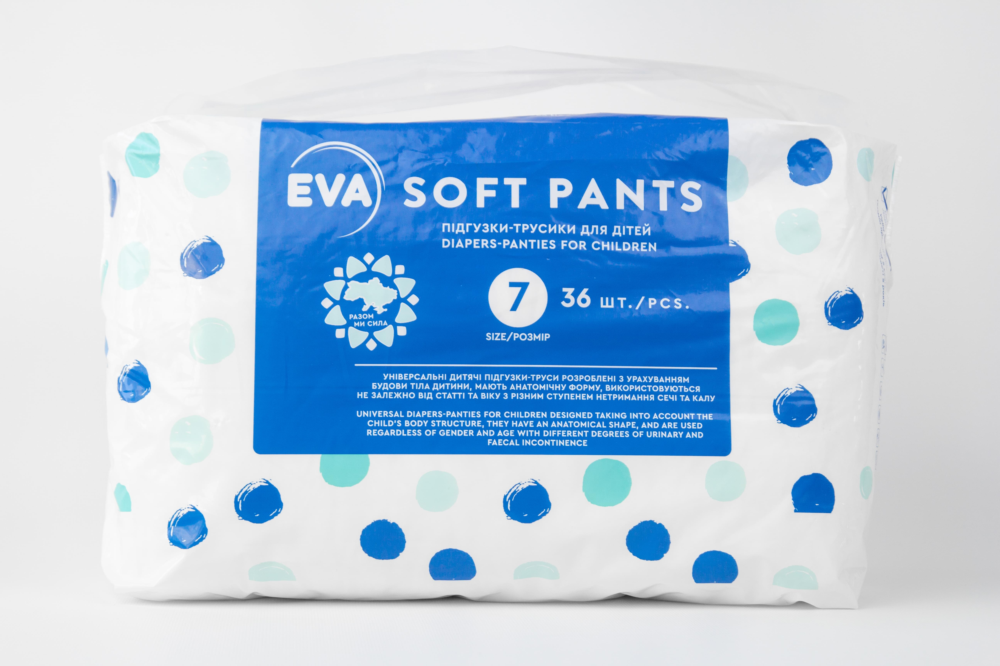
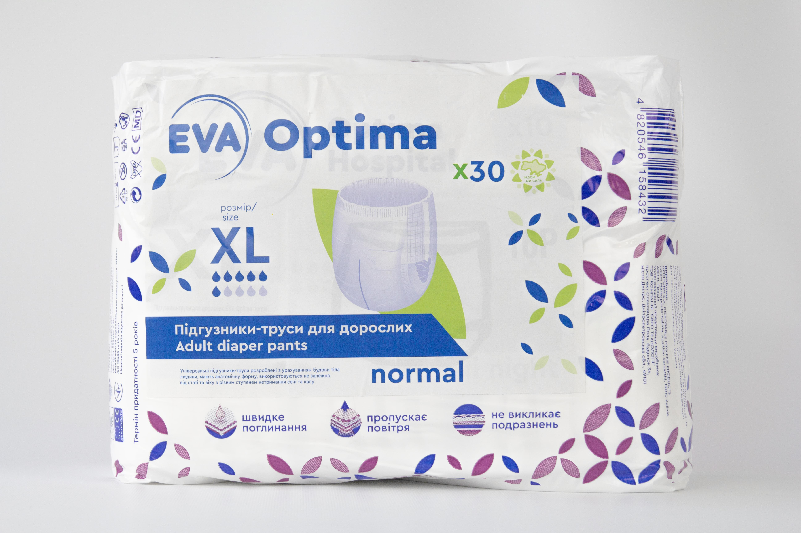

DIAPERS FOR ADULTS

The line of diapers for adults is designed for both active people and people with disabilities. Every person has the right to comfort, so this line was developed taking into account all the needs of a person. The product has been tested for urine absorption standards.
By choosing EVA OPTIMA hospital products, you get a guarantee of purity and quality. After all, OPTIMA hospital diapers have great advantages, namely:
- leakage protection consists of hydrophobic materials
- diapers do not cause irritation
- guarantee of dryness during use.
This line was developed with human comfort in mind, so OPTIMA hospital diapers are soft, do not squeeze the skin and do not cause irritation. Diapers are breathable and can be used regardless of a person's gender. The absorbent core is made of 100% chlorine-free long cellulose fibers and a high-quality super absorbent SAP polymer with an odor neutralizer. Absorbent ADL , provides quick absorption, retention and uniform distribution of liquid in the middle of the diaper.
Underpants diapers for adults

The line of diapers for adults is designed for both active people and people with disabilities. Every person has the right to comfort, so this line was developed taking into account all the needs of a person. The product has been tested for urine absorption standards.
By choosing EVA OPTIMA hospital products, you get a guarantee of purity and quality. After all, OPTIMA hospital diapers have great advantages, namely:
This line was developed with human comfort in mind, so OPTIMA hospital diapers are soft, do not squeeze the skin and do not cause irritation. Diapers are breathable and can be used regardless of a person's gender. The absorbent core is made of 100% chlorine-free long cellulose fibers and a high-quality super absorbent SAP polymer with an odor neutralizer. Absorbent ADL , provides quick absorption, retention and uniform distribution of liquid in the middle of the diaper.